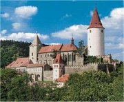

František Šír: K.H.Mácha (1860)
Mácha zemřel velmi mladý a za svého života se nestihl proslavit. Proto nevznikl jeho oficiální portrét. Všechny Máchovy „podobizny“ vycházejí z krátkého popisu jeho tváře a informace, že Mácha seděl modelem malíři Maškovi pro obraz Jana Křtitele. Spisovatelovu skutečnou podobu tudíž neznáme.
|
KAREL HYNEK MÁCHA
* 16. 11. 1810 (Praha)
† 5./6. 11. 1836 (Litoměřice)
Karel Hynek Mácha byl nejvýznamnějším českým romantikem. Jeho báseň Máj je jedním z nejkrásnějších děl české literatury.
Spisovatelův otec i bratr Michal se živili jako mlynáři. Mácha byl žákem Josefa Jungmanna, později vystudoval práva a v srpnu 1836 nastoupil jako advokátní praktikant do kanceláře J.F.Durase v Litoměřicích.
V době pražských studií hrál divadlo v ochotnické družině Josefa Kajetána Tyla v Kajetánském domě na Malé Straně. Zde se seznámil s Eleonorou Šomkovou (1817-1891), dcerou knihaře. S Lori měl nemanželského syna Ludvíka, který se narodil měsíc před Máchovou smrtí a nedožil se ani jednoho roku.
Mácha se rád toulal po zříceninách českých hradů a často je kreslil. Z Prahy podnikl dlouhou cestu do Krkonoš a Českého ráje. S přítelem Strobachem došel pěšky až do Benátek a během svého pobytu v Litoměřicích si pravidelně odskakoval do Prahy za Lori.
Když pomáhal hasit požár jednoho z litoměřických domů, zřejmě se napil infikované vody a onemocněl. Mácha ulehl a jeho stav se rychle zhoršoval. Když k němu přišel kněz, aby ho zaopatřil, vyhnal ho básník z domu. Lékař určil jako příčinu Máchovy smrti „dávení spojené s průjmem (cholerina)“. Spisovatelův pohřeb se konal 8.11.1836 v Litoměřicích. Na stejný den byla původně plánována Máchova svatba s Lori...
Většina Máchových děl vyšla až po autorově smrti. Během svého života publikoval knihu Máj (jako první svazek sebraných spisů). Časopisecky vyšlo několik básní (Svatý Ivan, ohlasová poezie...) a prózy Křivoklad, Dosloví ke Křivokladu a Obrazy ze života mého (Večer na Bezdězu, Marinka).
|
Máchův autoportrét
Profesor Emanuel Vlček se pokusil moderními metodami zrekonstruovat Máchovu podobu. Při své práci vycházel nejen z dochovaných písemných svědectví a spisovatelova autoportrétu, ale především z analýzy Máchových ostatků. Ty byly 1.10.1938 (ihned po odtržení Sudet) vyzdviženy z litoměřického hřbitova, prozkoumány antropologem Jiřím Malým a 5.5.1939 slavnostně pohřbeny na vyšehradském Slavíně.
|
Máchovy básně
První básnické pokusy Karla Hynka Máchy jsou v němčině. Brzy ale začal psát česky. Věnoval se ohlasové tvorbě, subjektivní lyrice, psal znělky a romantické lyrickoepické skladby (Mních, Máj). Veršované pasáže najdeme také v jeho prózách.
|
|
Pokus se přeložit Máchovu báseň do češtiny nebo najdi její český překlad.
Která z uvedených básní tě nejvíce zaujala? Proč?
|
Máchova próza
Mácha se věnoval hlavně historické próze. Rozhodl se napsat čtyřdílný román Kat, ale jeho části Vyšehrad, Valdek a Karlův tejn zůstaly pouze v náčrtcích. Samostatně vyšel Křivoklad a reakce na jeho kritiku Dosloví ke Křivokladu. K historii se vážou i zlomky Máchových dramat (Král Fridrich, Boleslav, Bratrovrah, Bratři). Dvojice próz Obrazy ze života mého (Večer na Bezdězu, Marinka) se odehrává v současnosti a je pro ně typická silná subjektivizace a lyrizace. Stejně jako v Pouti krkonošské, která navíc obsahuje fantastické prvky. Román Cikáni shrnuje všechna důležitá témata Karla Hynka Máchy. Méně významné jsou Máchovy prózy Klášter sázavský, Valdice, Rozbroj světů, Sen nebo Dudák.

Máchova kresba zříceniny hradu Bezděz
Hrad Bezděz dnes
Najdi v atlase trasu Máchovy cesty do Benátek. Vedla z Prahy přes Linec, Innsbruck a Brennerský průsmyk. Vracel se přes Terst, Lublaň, Štýrský Hradec a Vídeň. Zkus zjistit, za jak dlouho ji Mácha urazil a kolik kilometrů ušel.
|
Karel Hynek Mácha: Křivoklad
Děj Křivokladu se odehrává na sklonku vlády Václava IV. O této době se ale mnoho nedovídáme. Klíčové jsou osudy kata, který je královým pobočníkem, a samotného panovníka. Krále Václava IV. zajala odbojná šlechta a vězní ho na Křivoklátě. Postavení kata je ještě horší. Ví, že je levobočkem posledního Přemyslovce, a přesto musí vykonávat tu nejopovrhovanější práci. V povídce vystoupí také Jan Hus. Poslední významnou postavou je Miláda, která kata miluje, přestože musel popravit jejího otce. Její smrtí vrcholí katův tragický osud.
Karel Hynek Mácha: Marinka
Povídka Marinka je spolu s Večerem na Bezdězu součástí cyklu Obrazy ze života mého. V Marince se střídají prozaické pasáže s veršovanými a její kompozice připomíná operu (overtura, dějství první, intermezzo, dějství druhé, finále). Hlavní hrdina popisuje krátké setkání s krásnou Marinkou v chudinské čtvrti Na Františku. Když se po čase vrací zpět, dozvídá se, že zemřela.
Karel Hynek Mácha: Pouť krkonošská
Pouť krkonošskou můžeme označit za první český horor. Mladý hrdina putuje ke Sněžce, na jejímž vrcholu nachází klášter, ve kterém přebývají mniši. Kromě živých a mrtvých mnichů jsou tu i mniši, kteří jednou za rok vstávají z hrobů. Nemohou sice opustit klášter, ale vidí kvetoucí jarní přírodu za jeho zdmi. Jejich postavení je natolik zoufalé, že řada z nich raději zvolí věčnou smrt. Ke stejné volbě se odhodlá i poutník...
|

Hrad Křivoklát dnes
Najdi v ukázce rysy romantismu.
Které postavy v ukázce vystupují?
Co se o nich dozvídáme?
Jaké jsou vztahy mezi jednotlivými postavami?
Bezděz na dobové malbě T.Endera.
Jak na tebe působí Máchova povídka Marinka?
Které rysy typické pro Máchovu tvorbu v ní najdeš?
Kolik postav v povídce zemřelo? Jaké jsou mezi nimi vztahy?

Sněžka, Krkonoše
Najdi v ukázce fantastické prvky.
Nakresli k povídce ilustraci.
|
Máchova kresba Kokořína

Hrad Kokořín dnes
|
Karel Hynek Mácha: Cikáni
Román Cikáni se odehrává v okolí Kokořína. Složitý děj částečně připomíná Máchův Máj (např. zhýralý otec svede milou vlastního syna). Postavy Cikánů jsou typickým symbolem romantických vyděděnců. Starý cikán se trápí kvůli své milence, která ho opustila, když byl gondoliérem v Benátkách. Mladý cikán zase žárlí na milovanou Leu. Ani jeden z nich neví, že obě dívky svedl hrabě Valdemar Lomecký z Borku, který je skutečným otcem mladého cikána. Starý cikán nakonec hraběte zavraždí, je za svůj zločin popraven a jeho milá spáchá sebevraždu v blázinci. Ani Lea neunese své zneuctění, a tak mladý cikán zůstává zcela sám.
Vydání Cikánů původně zakázala cenzura. Mohli vyjít až roku 1857.
|
Kdo napsal Máchova díla?
Vědec Oldřich Králík přišel se zajímavou teorií, podle níž některá díla připisovaná Máchovi napsal Karel Sabina. Jedná se o texty, které nevyšly za Máchova života a dochovaly se pouze v opisech cizích osob. Jde o celý román Cikáni a několik básní se zednářskou symbolikou (Aniž křičte, že vám stavbu bořím...).
Charakterizuj postavu cikána.
Jaká je Lea?
Které další postavy v ukázce vystupují? Co se o nich dozvídáme?
|
Máj (1836) byl jedinou knihou, která Máchovi vyšla za jeho života. Musel si ji ale vydat vlastním nákladem. Všech 600 výtisků se brzy rozprodalo, domácí kritika (Tomíček, Chmelenský, Tyl...) však tuto romantickou báseň odsoudila jako příliš nečeskou...
První vydání Máje
|
Karel Hynek Mácha: Máj
Lyrickoepická skladba Máj bývá považována za vůbec nejlepší českou báseň. Její romantický děj můžeme zrekonstruovat z několika náznaků. V 1. zpěvu čeká Jarmila na svého milého, ale když se dozví, že bude popraven za otcovraždu, skočí ze skály a utopí se v jezeře. 2. zpěv zachycuje Vilémovo rozjímání nad vlastním osudem – když ho otec vyhnal z domova, stal se vůdcem loupežníků, a když zavraždil svůdce své dívky, poznal v něm vlastního otce. 1. intermezzo se odehrává na popravišti a vystupují v něm duchové a další nadpřirozené bytosti. 3. zpěv zachycuje Vilémovu popravu. Ve 2. intermezzu naříkají loupežníci nad ztrátou svého vůdce. Ve 4. zpěvu se 7 let po popsaných událostech dostává na místo děje poutník a zamýšlí se nad tragikou lidského osudu. Tragický děj Máje kontrastuje s nádhernou jarní přírodou, která je právě v plném rozkvětu. Mácha evokuje atmosféru pomocí zvukomalby a fascinujících básnických obrazů.
|
Máji předchází ironicky míněná skladba Čechové jsou národ dobrý. Narozdíl od vlastního Máje byla přijata kladně. Zkus obě básně srovnat.
Vyber si kratší pasáž z Máje, nauč se ji nazpaměť a zarecituj ji ostatním spolužákům. Vysvětli důvody své volby.

Máchovy ostatky
|
Deníky, zápisníky, dopisy
Ve třetím svazku Máchových spisů vyšly spisovatelovy soukromé texty. Ucelenou podobu má Deník na cestě do Itálie a Deník z roku 1835. Spíše zlomkovité jsou jeho literární zápisníky, které obsahují výpisky z četby, první náčrtky Máchových děl a básníkovy myšlenky. Dochovalo se i několik dopisů.
|
Karel Hynek Mácha: Deník z roku 1835
Máchův Deník z roku 1835 má dvě varianty (tradičně označované A a B). Obsahoval i šifrované pasáže, které se podařilo rozluštit Jakubu Arbesovi v 80. letech 19. století. Vzhledem k jejich intimní povaze a s ohledem na budovaný kult Karla Hynka Máchy nebyly zahrnuty do žádného vydání Máchových spisů. Poprvé vyšly v 70. letech 20. století (česky jako bibliofilie v počtu 20 kusů, italsky v Benátkách). Oficiální české vydání pochází až z roku 1993.
Máchův šifrovaný rukopis
|
Eleonora (Lori) Šomková
(1817-1891)
Myslíš si, že je správné vydávat soukromé texty spisovatelů?
Proč vyšla Máchova korespondence nebo jeho deníky a zápisníky?
|
Internetové stránky
Mácha, rozcestník
Mácha: Máj, první vydání z roku 1836
Mácha: Máj, překlad do angličtiny
Máchovy kresby hradů
Máchova podoba
Sárközi: Máchův byronismus
Vašák: Máj
Hodrová: Mácha
Žák: Bezděz, článek
Exkurze
Památník K.H.Máchy, Doksy
Slavín, pražský Vyšehrad
Máchova socha, pražský Petřín
Máchova světnička, Litoměřice
Pomník Karla Hynka Máchy na pražském Slavíně
Máchova osobnost i jeho tvorba inspirovaly řadu umělců k vytvoření překrásných děl. Znáš některá z nich? Vzpomeň si na české spisovatele, ilustrátory, hudební skladatele nebo filmaře.
Uspořádejte v den Máchovy smrti nebo narození autorské čtení nebo uveďte pásmo o jeho životě a tvorbě.
|
Doporučená četba
Ani labuť ani Lůna, red. V.Nezval, nákl. Otto Jirsáka, Praha 1936
Eisner, Pavel: Na skále, Dvanáct zastavení máchovských, K.Voleský, Praha 1945
Intimní Karel Hynek Mácha, usp. M.Pohorský, Československý spisovatel, Praha 1993 (deníky)
Ivanov, M.: Důvěrná zpráva o Karlu Hynku Máchovi, Československý spisovatel, Praha 1977
Janský, Karel: Karel Hynek Mácha, Život uchvatitele krásy, Melantrich, Praha 1953
Karel Hynek Mácha, Osobnost, dílo, ohlas, usp. A.Novák, Družstevní práce, Praha 1937
Karel Hynek Mácha ve vzpomínkách současníků, usp. Karel Janský, Melantrich, Praha 1959
Králík, Oldřich: Demystifikovat Máchu, Profil, Ostrava 1969
Krčma, František: Karel Hynek Mácha, Soupis prací o jeho životě, díle a kultu, Praha 1932
Krejčí, F.V.: Karel Hynek Mácha, Spolek výtvarných umělců Mánes, Praha 1907
Křivánek, Vladimír: Karel Hynek Mácha, Horizont, Praha 1986
Literární pouť Karla Hynka Máchy, Ohlas Máchova díla v letech 1836-1858, usp. P.Vašák, Odeon, Praha 1981
Mráz, Bohumír: Karel Hynek Mácha: Hrady spatřené, Panorama, Praha 1988
Mukařovský, Jan: Kapitoly z české poetiky, díl III., Svoboda, Praha 1948
Otruba, Mojmír: Karel Hynek Mácha, Daleká pouť, Československý spisovatel, Praha 1976
Panáček, Josef, Wágner, Jaromír: Karel Hynek Mácha v kraji svého Máje, Severočeské nakladatelství, Ústí nad Labem 1990
Pražák, Albert: Karel Hynek Mácha, Státní nakladatelství, Praha 1936
Prostor Máchova díla, red. P.Vašák, Československý spisovatel, Praha 1986
Realita slova Máchova, usp. Grebeníčková, Králík, Československý spisovatel, Praha 1967
Spisy Karla Hynka Máchy (3 svazky), SNKLU
Štěpánek, Vladimír: Karel Hynek Mácha, Melantrich, Praha 1984
Torso a tajemství Máchova díla, red. J.Mukařovský, Fr.Borový, Praha 1939
Věčný Mácha, Památník českého básníka, Čin, Praha 1940
|
Máchův kult
Za svého života musel Mácha čelit kritice českých buditelů, už v této době ale měl i své obdivovatele. Po Máchově smrti se o jeho odkaz staral Karel Sabina a později Jakub Arbes, který rozluštil šifrované pasáže Máchových deníků. Otevřeně se k němu hlásila řada spisovatelů, např. Jan Neruda a ostatní májovci. Přes prvotní odsouzení Máje začala Máchovu tvorbu oceňovat i kritika (F.X.Šalda). Pouze literární vědci ho považovali za Byronova epigona, a to až do začátku 20. století! Nejdůležitější ovšem byla obliba Máchových děl u řadových čtenářů. Díky ní se postupně zrodil Máchův kult. Jeho hlavním rysem je idealizace Máchy jako jemného básníka milostné poezie. Tak je zachycen na petřínské soše J.V.Myslbeka z roku 1912.
Filmy
Mág, režie F.Vláčil
|
|